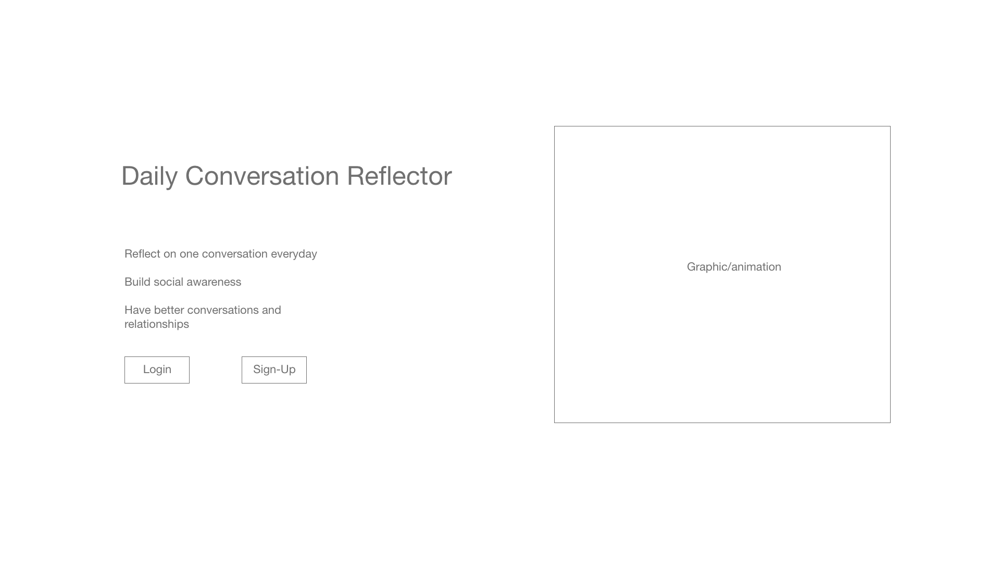

Hai Yu Zhao
Final Project Initial Sketches
At this stage, I drew up some low-fidelity wireframes on Adobe XD to plan out the layout and information structure of my webpage.
I decided to start with a sign-up/login screen so that each user has their own account that they can go back to and save information. I divided out the page to include an area for an animation/interactive element in order to engage users.
I then drew up a home/navigation page for when the user logs into their account. To keep things really simple, I decided to have two options: the ability to create a new entry and the option to check back on past entries.
I decided to make the actual process of creating a new entry/reflection as simple as possible and made it a simple form for users to input their answers. I tried to keep the questions as easy to answer as possible for people who may struggle to retain information from their social interactions.